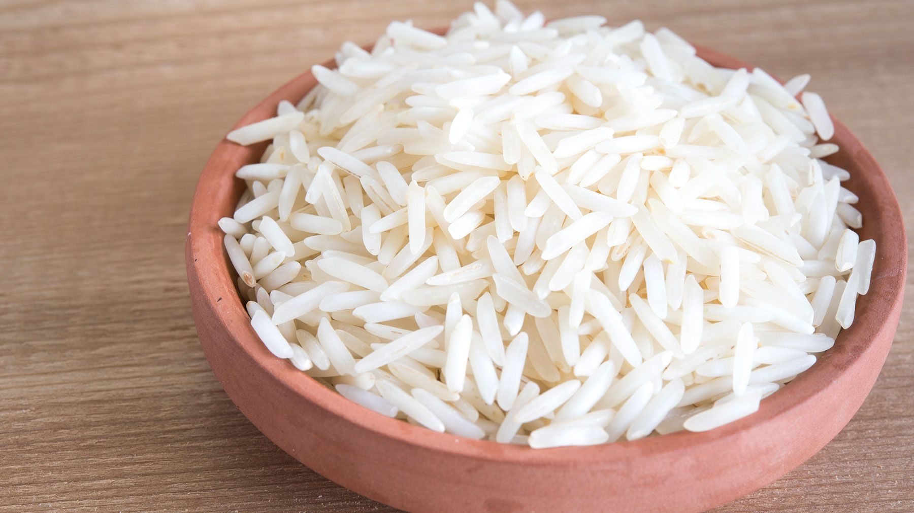

White Rice

White rice is a delicious side that can be added to just about any dish.
Ingredients
Steps
- using a strainer, run the rice through under a faucet to 'clean' the rice and
remove the starch
- place the strained rice in the rice maker with the water
- press the cook button
- wait for it to cook!